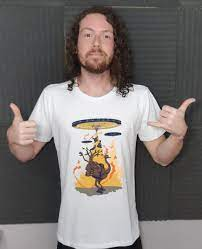

Nascido em Pelotas-RS, Victor Schiavon, o tão conhecido Gemaplys traz para o mercado o que há de melhor para o seu aprendizado na área de programação. Victor fundou seu canal em 11 de janeiro de 2014, e seus cursos em 28 de outubro de 2022, os quais já são destaque no país e conquistam novos cursistas a cada dia.
Nossa missão é: "Proporcionar boas oportunidades de trabalho e desenvolver a lógica de programação aos clientes".
Oferecemos profissionais experientes e antenados às mudanças no mundo da programação. O atendimento inclui a possibilidade de aulas com professores como Gu Select, André Young, Roberto Umild entre outros.
Canal do Gu Select  Canal do André Young Canal do Umild